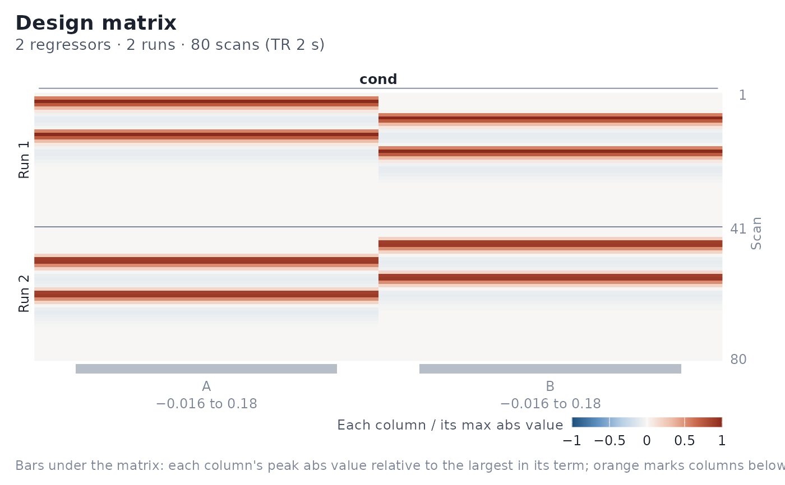
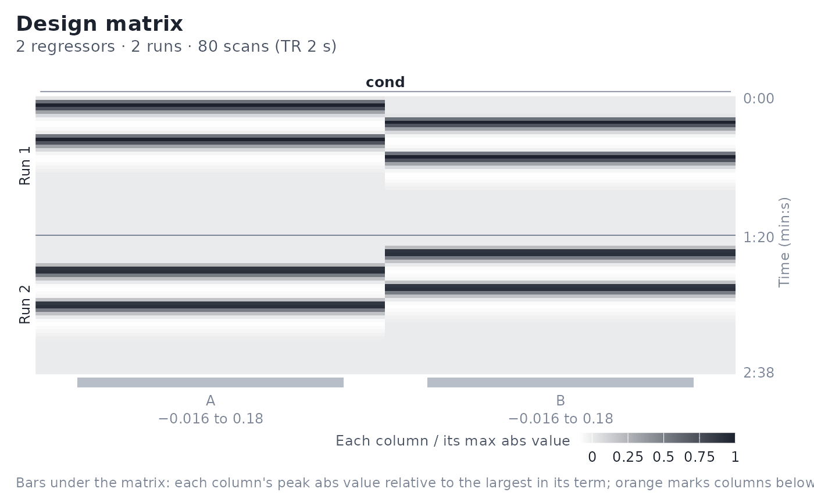
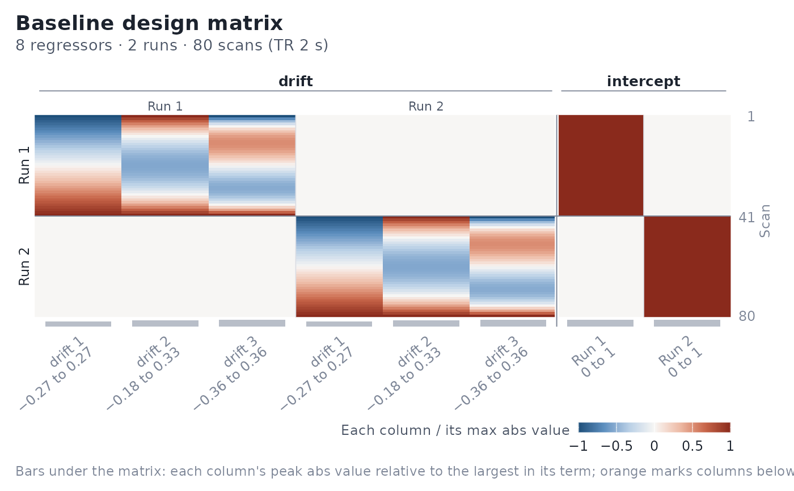

Draws the design matrix as an image in the style of SPM: one row per scan (time runs downward), one column per regressor. Columns are grouped by model term under a spanner, runs are separated by thin rules and labelled in the left margin, and the right margin marks the first scan of each run.
Usage
# S3 method for class 'event_model'
design_map(
x,
block_separators = TRUE,
rotate_x_text = TRUE,
fill_midpoint = NULL,
fill_limits = NULL,
scale = c("column", "none"),
palette = c("diverging", "grey"),
y_axis = c("scan", "time"),
title = "Design matrix",
subtitle = NULL,
max_labels = 60,
...
)
# S3 method for class 'baseline_model'
design_map(
x,
block_separators = TRUE,
rotate_x_text = TRUE,
fill_midpoint = NULL,
fill_limits = NULL,
scale = c("column", "none"),
palette = c("diverging", "grey"),
y_axis = c("scan", "time"),
title = "Baseline design matrix",
subtitle = NULL,
max_labels = 60,
...
)Arguments
- x
An
event_modelorbaseline_model.- block_separators
Logical; draw a rule at each run boundary.
- rotate_x_text
Logical; angle the column labels when they would otherwise overlap. With
FALSE, labels are always horizontal.- fill_midpoint
Numeric or
NULL. Centre of the diverging fill scale; defaults to 0.- fill_limits
Numeric length-2 vector or
NULL. Fill-scale limits; by default symmetric aboutfill_midpoint(diverging) or the data range (grey).- scale
"column"(default) divides each column by its maximum absolute value;"none"plots raw values.- palette
"diverging"(default; the package's signed palette, symmetric about zero) or"grey"(white at the minimum to ink at the maximum, as in SPM).- y_axis
Label the right-hand axis by
"scan"number (default) or onset"time"(min:s, from the sampling frame).- title, subtitle
Plot title and subtitle. The default subtitle states the number of regressors, runs, and scans, and the TR, and names any near-flat columns.
- max_labels
Maximum number of column labels to print; beyond this labels are thinned to every k-th column.
- ...
Passed to
ggplot2::geom_raster().
Details
By default each column is divided by its maximum absolute value
(scale = "column", stated in the legend) so regressors in different units
share one fill scale; zero is always the neutral midpoint of the
package's diverging palette. Because rescaling would make a near-flat
regressor look healthy, real magnitudes stay visible: a strip of bars under
the matrix shows each column's peak absolute value relative to the largest
in its term, and columns below 5% of that (or all zero) are marked in
orange, outlined over the matrix, and named in the subtitle. With 12 or
fewer columns each label also carries the column's raw range. Use
scale = "none" to plot raw values, or palette = "grey" for an SPM-style
greyscale.
For baseline models, columns are grouped by term (drift, intercept, nuisance) and then run, with a "Run k" sub-spanner over each run's columns, so the block-diagonal structure reads as a staircase; nuisance columns are drawn at reduced opacity so they do not dominate.
Examples
des <- data.frame(
onset = c(0, 10, 20, 30, 5, 15, 25, 35),
run = rep(1:2, each = 4),
cond = factor(c("A", "B", "A", "B", "B", "A", "B", "A"))
)
sframe <- fmrihrf::sampling_frame(blocklens = c(40, 40), TR = 2)
emod <- event_model(onset ~ hrf(cond), data = des, block = ~run,
sampling_frame = sframe)
design_map(emod)

design_map(emod, palette = "grey", y_axis = "time")

bmod <- baseline_model(basis = "poly", degree = 3, sframe = sframe)
design_map(bmod)
